Questão 1 · Estenose mitral · Anticoagulação oral · 4000127330Paciente, 52 anos, sexo masculino, previamente hígido, assintomático, comparece à consulta de rotina no ambulatório. Ao exame físico, chamam atenção sopro em ru ar diastólico 3+/6+ no foco mitral e ritmo cardíaco irregular com frequência cardíaca em torno de 84 batimentos por minuto. Realizado eletrocardiograma ( figura abaixo) e ecocardiograma transtorácico que evidenciou estenose mitral moderada. Qual conduta deve ser tomada nesse momento?

A Iniciar uso de rivaroxaban sem necessidade de monitoração do INR.
B Iniciar varfarina e realizar a monitorização do INR ambulatorialmente.
C Internar o paciente para administrar enoxaparina e iniciar uso de varfarina.
D Manter conduta expectante, pois o paciente apresenta baixo risco de complicações
Questão 2 · Escores de avaliação de risco tromboembólico e hemorrágico · 4000124266Na avaliação de paciente de 78 anos, do sexo feminino com diagnóstico prévio de acidente vascular cerebral isquêmico, diabética e hipertensa com brilação atrial não valvar e insu ciência cardíaca (fração de ejeção do ventrículo esquerdo de 32%), qual o valor do escore CHA2DS2-VASC e qual o significado da pontuação encontrada?
A Escore de 07; elevado risco de sangramento.
B Escore de 05; elevado risco tromboembólico.
C Escore de 08; elevado risco tromboembólico.
D Escore de 08; elevado risco de sangramento.
E Escore de 07; elevado risco tromboembólico.
Questão 3 · Dabigatrana · Critérios para escolha da estratégia terapêutica · 4000112543Homem de 66 anos de idade, antecedentes de hipertensão arterial, diabete melito e dislipidemia, refere início de palpitações há 2 meses. Não há insu ciência cardíaca, valvopatia ou doença coronariana. Pressão arterial: 130 x 80 mmHg. Hemograma, coagulograma, função renal, eletrólitos, glicemia, enzimas hepáticas e hormônios tireoidianos: normais. Fração de ejeção ventricular esquerda: normal. O eletrocardiograma realizado no momento da consulta é mostrado a seguir. Admitindo-se que não há contraindicações, nesse momento, a conduta correta é:
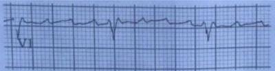

A encaminhar o paciente ao pronto-socorro para cardioversão elétrica.
B prescrever ácido acetilsalicílico.
C prescrever clopidogrel.
D prescrever dabigatrana ou rivaroxabana.
E prescrever warfarina sódica e amiodarona.
Questão 4 · Antagonistas da vitamina K · Escores de avaliação de risco tromboembólico e hemorrágico · 4000081795Manejo do sangramento associado aos anticoagulantes orais Mulher de 54 anos de idade, com brilação atrial, está anticoagulada com 5 mg/dia de varfarina. Ela desenvolveu uma infecção de trato urinário que foi tratada com cipro axocina 250 mg via oral, de 12 em 12 horas, por 7 dias. Ela chega ao serviço de emergência queixando-se de sangue na urina e ocorrência fácil de hematomas. O exame físico mostra equimoses nos braços. A urina está avermelhada, mas não há coágulos. Após infundir 100 ml de solução salina estéril em sua bexiga, a urina retorna com apenas uma tonalidade rósea. O exame de urina de rotina mostra de 3 a 5 leucócitos por campo e várias hemácias por campo. Não há bactérias presentes. O INR é de 7.0. Qual é a melhor abordagem da coagulopatia desta paciente?
A Administrar 10 mg EV de vitamina K;
B Administrar 2 mg SC de vitamina K;
C Administrar 1 mg de vitamina K sublingual;
D Retardar a próxima dose de varfarina até que o INR caia para 2.0;
E Transfundir 4 unidades de plasma fresco congelado;
Questão 5 · Anticoagulação oral · Tratamento · 4000075274Mulher, 58 anos, em brilação atrial com 72 horas de evolução e CHA₂DS₂-VASc de 4 pontos. Possui clearance de creatinina estimado em 12mL/min. A conduta mais adequada nesta paciente, neste momento, é:
A ecocardiograma transesofágico e na ausência de trombo, cardioversão elétrica e anticoagulação com varfarina por 4 semanas
B anticoagulação prévia por 3 semanas na impossibilidade de eco transesofágico, cardioversão elétrica e anticoagulação com varfarina por toda a vida
C anticoagulação prévia por 3 semanas na impossibilidade de eco transesofágico, cardioversão elétrica e anticoagulação com varfarina por 4 semanas
D eco transesofágico e na ausência de trombo, cardioversão elétrica e anticoagulação com DOAC por toda a vida
Questão 6 · Anticoagulantes antagonistas da vitamina K · Antagonistas da vitamina K · 4000050042Paciente masculino de 76 anos procura a emergência devido à preocupação com resultado de exame laboratorial alterado. Nega sintomas. Apresenta história de brilação atrial, dislipidemia, diabetes e hipertensão arterial. Faz uso de rosuvastatina 20 mg ao dia, metformina 850 mg duas vezes ao dia e enalapril 20 mg ao dia. Apresenta FC 68/min, PA 134/80 mmHg, FR 12/min, temperatura 36,7 °C, e SpO₂ 99% em ar ambiente. Ao exame físico, não se constata equimose, hematoma ou sangramentos. Revisão de sistemas é negativa. Exame laboratorial trazido demonstra tempo de protrombina/INR = 8,5. Qual é a conduta correta para esse caso, segundo guidelines recentes?
A Omitir varfarina até nível terapêutico e, então, reiniciar varfarina com redução de 10- 15% na dose semanal.
B Administrar vitamina K oral e omitir varfarina até nível terapêutico e, então, reiniciar varfarina com redução de 10- 15% na dose semanal.
C Administrar vitamina K parenteral e omitir varfarina até nível terapêutico e, então, reiniciar varfarina com redução de 10-15% na dose semanal.
D Administrar plasma fresco congelado e omitir varfarina até nível terapêutico e, então, reiniciar varfarina com redução de 10-15% na dose semanal.
E Administrar concentrado de complexo protrombínico e omitir varfarina até nível terapêutico e, então, reiniciar varfarina com redução de 10-15% na dose semanal.
Questão 7 · Medicações usadas para controle da f requência cardíaca · 4000036378São drogas que podem ser usadas para controle de frequência cardíaca em pacientes hemodinamicamente estáveis com fibrilação atrial de alta resposta ventricular, exceto:
A Verapamil.
B Metoprolol.
C Atropina.
D Diltiazem.
Questão 8 · Tratamento · 4000013581Homem de 77 anos se queixa de palpitação em repouso. Sem outras queixas. Nega doenças conhecidas ou uso de medicamentos. Ao exame físico, PA: 140 X 90mmHg, FC 116bpm, FR 15ipm, SpO₂ 98%. O ritmo cardíaco é irregular, a primeira bulha é hiperfonética e há sopro mesodiastólico em ru ar no apex do coração. Sem outras alterações ao exame físico. Ecocardiograma: ventrículo esquerdo d e dimensões levemente aumentadas, sem dé cits segmentares da contratilidade e fração de ejeção de 40%. Átrio esquerdo de volume muito aumentado. Estenose mitral moderada e insuficiência mitral moderada de morfologia reumática. Não se visualizam trombos. Eletrocardiograma; Considerando o caso descrito, assinale a alternativa que apresenta a prescrição CORRETA para esse paciente.
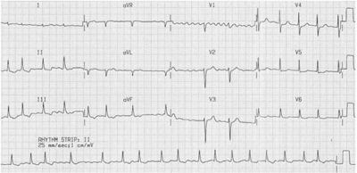
A Bisoprolol e varfarina.
B Digoxina e enoxaparina.
C Diltiazem e rivaroxabana.
D Metoprolol e apixabana.
Questão 9 · Anticoagulantes antagonistas da vitamina K · Antagonistas da vitamina K · 4000124569Paciente chegou ao OS, com INR de 6, sem sangramentos com exame físico normal. De qual droga abaixo ele mais se beneficiará?
A Vitamina K1 2,5 mg via oral
B Plasma fresco
C Complexo protrombínico
D Vitamina K 10 mg IV
Questão 10 · Conduta na taquiarritmia instável · 4000113210Homem, 60 anos, tabagista, hipertenso crônico, em tratamento irregular, apresentou há 12h palpitação de início súbito seguida de síncope. Nega episódios de arritmias. Exame físico: PA= 120 X 60 mmHg, FC= 140 bpm, FR= 32 irpm, agitado, confuso, estase jugular bilateral, estertores crepitantes em bases pulmonares, arritmia cardíaca, pulso liforme e edema 2+/4+ em MMII. ECG: fibrilação atrial com resposta ventricular de alta frequência. A conduta imediata é:
A Anticoagulação
B Cardioversão elétrica sincronizada
C Desfibrilação
D Lanatosídeo IV
E Metoprolol IV.
Questão 11 · Dabigatrana · 4000100354Qual dos anticoagulantes abaixo é inibidor direto da trombina?
A Rivaroxabana
B Apixabana
C Edoxabana
D Dabigatrana
Questão 12 · Escores de avaliação de risco tromboembólico e hemorrágico · 4000100343Os escores de CHA2DS2-VASc e HAS-BLED são utilizados na prática clínica de qual situação?
A Fibrilação atrial
B Insuficiência cardíaca
C IAM
D Válvulas cardíacas metálicas
Questão 13 · Critérios para escolha da estratégia terapêutica · Medicações usadas para controle do ritmo cardíaco · 4000097383Homem, 72a, é admitido no pronto-socorro com história de palpitações de início súbito há 1 hora. Nega dispneia, síncope ou queixas prévias de palpitações. Antecedentes pessoais: hipertensão arterial sistêmica em uso de hidroclorotiazida e amlodipina. Exame físico: bom estado geral; FR = 24 irpm; PA = 112 x 68 mmHg, consiente, orientado; pulmões: ausculta: sem alterações; Coração: bulhas rítmicas sem sopros, eletrocardiograma: A CONDUTA É:
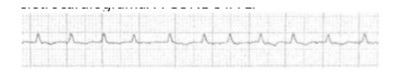
A Cardioversão elétrica.
B Adenosina intravenosa.
C Amiodarona intravenosa.
D Heparina subcutânea
Questão 14 · Anticoagulação oral · 4000085702Paciente de 76 anos, com diabetes melito (com função renal normal), insu ciência cardíaca e brilação atrial, vem fazendo uso de dabigatrana, porém informa ao médico não ter mais condições de continuar comprando o medicamento. Nesse caso, está indicada a substituição de dabigatrana por:
A aspirina (100 mg/dia), devendo seu uso ser iniciado no dia seguinte à suspensão.
B clopidogrel, devendo seu uso ser iniciado no mesmo dia da suspensão.
C heparina (5.000 UI, por via subcutânea, a cada 12 horas) devendo seu uso ser iniciado 3 dias antes da suspensão.
D varfarina, devendo seus uso ser iniciado no dia seguinte à suspensão.
E varfarina, devendo seu uso ser iniciado 3 dias antes da suspensão.
Questão 15 · Fatores clínicos predisponentes · Tratamento · Medicações usadas para controle do ritmo cardíaco · 4000078307Mulher, 78 anos, com diabetes mellitus e insu ciência cardíaca. Fração de ejeção preservada, adequadamente tratada em classe funcional II. É admitida na emergência com história de dispneia súbita e dor torácica em repouso, iniciadas há 6 horas. Considerando o seu eletrocardiograma (ECG) pode-se afirmar que:
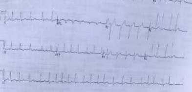
A Deve ser realizada manobra vagal para avaliar mais adequadamente a atividade elétrica atrial antes de qualquer intervenção.
B A paciente deve ser internada em unidade fechada para administração de amiodarona venosa, com dose de ataque e manutenção.
C A paciente tem instabilidade clínica e portanto tem indicação de cardioversão elétrica sincronizada, imediata, como o tratamento.
D Deve ser realizado ecocardiograma transesofágico de urgência antes de qualquer tentativa de reversão elétrica ou química para excluir a presença de trombos no átrio esquerdo.
Questão 16 · Tratamento · 4000068870Uma mulher de 50 anos, portadora de hipertensão arterial, hipotireoidismo e dislipidemia procurou o ambulatório com quadro de palpitações. Realizado eletrocardiograma, mostrou brilação atrial com alta resposta ventricular. Optou-se por internação hospitalar e realização de ecocardiograma transesofágico, que não demonstrou trombos intracavitários e apresentou função sistólica do ventrículo esquerdo preservada. Após cardioversão da arritmia, o fármaco recomendado para manutenção do ritmo sinusal é
A atenolol
B propafenona
C amiodarona
D digoxina
Questão 17 · Escores de avaliação de risco tromboembólico e hemorrágico · Tratamento · 4000052062Em relação à fibrilação atrial, marque a INCORRETA:
A Propafenona, sotalol e amiodarona são drogas que podem ser utilizadas para evitar a recorrência da FA.
B O escore de CHA2 DS2 - VASc é utilizado para avaliação de risco para fenômenos tromboembólicos em pacientes portadores de fibrilação atrial.
C O escore HAS- BLED utiliza variáveis clínicas para identificação de pacientes com risco de hemorragia pelos anticoagulantes orais.
D A cardioversão elétrica pode ser realizada após anticoagulação, por um período mínimo de 2 semanas com varfarina ou rivaroxabana e mantida por pelo menos 3 semanas.
E Betabloqueadores e bloqueadores de canais de cálcio (diltiazem e verapamil) são utilizados para o controle da resposta ventricular.
Questão 18 · Classif icação clínica · 4000049908Fibrilação Atrial (FA) paroxística é definida pela
A duração menor do que 7 dias.
B ausência de sintomas.
C ausência de trombos intra-atriais.
D baixa resposta ventricular.
Questão 19 · Anticoagulação oral · 4000025621Em pacientes idosos com fibrilação atrial paroxística, a melhor e mais segura maneira de reduzir a recorrência de AVC é:
A Aspirina, 325 mg ao dia.
B Aspirina, 325 mg ao dia, e clopidogrel, 75 mg ao dia.
C Apixabana.
D Warfarin.
Questão 20 · Escores de avaliação de risco tromboembólico e hemorrágico · 4000020783Um dos muitos acrósticos usados em medicina é o CHADS 2, (evoluiu para CHA2 DS2-VASC), usado para avaliar risco de acidente vascular cerebral em pessoas com brilação atrial, medida importante para médicos que atuam em Atenção Primária à Saúde (APS). Entre as opções abaixo qual a condição clínica é pontuada nesta avaliação de risco? Marque a CORRETA:
A Crise Hipertensiva
B Hipertensão intracraniana
C Alteração de ritmo cardíaco
D Diabetes Mellitus
Questão 21 · Fibrilação Atrial · Distúrbios de ritmo cardíaco · 4000017805Caso clínico- paciente sem doenças prévias; Idade: 19 anos: sexo: feminino; Sinais e sintomas: tremores nas extremidades, nervosismo e palpitações tarquicárdicas (FC = 150 bpm, PA 135 mmHg x 65 mmHg, pulsos radiais palpáveis e arrítimicos); Avaliação cardiovascular evidenciou ictus cordis in situ, ritmo cardíaco irregular em 2 tempos, taquicárdico, bulhas normofonéticas, sem sopros ou ruídos adventícios. Na palpação, percebeu-se glândula tireoide indolor, levemente aumentada e não nodular. Resultado de dosagem séricas: TSH (tirotro na) = 0,05 mU/L (valores de referência = 0,4 - 4,2 mU/L); T4 livre ( tiroxina livre) = 4,0 nanogramas/dL (valores de referência = 0,8 - 2,7 nanograma/dL); anticorpos antirreceptor de TSH (ou Trab) = 2 U/L (valor de referência < 10 U/L); anticorpos antitireoglobulinas = positivo 1/6.400 ( valores de referência não reagente < 1/100); determinação de anticorpos antiperoxidase tireoidiana (anti-TPO) = 70 U/mL ( valores de referência < 35 U/mL). Ecodopplercardiograma = normal. Tira de ritmo eletrocardiográfico (ECG) mostrada na figura a seguir (derivação D2, velocidade do papel: 25 mm/s, calibração: 1 cm= 1 mV). A respeito das informações do caso clínico descrito anteriomente, julgue o item subsequente. A arritimia cardíaca mostrada na tira de ECG é a fibrilação atrial.

A Certo.
B Errado.
Questão 22 · Síndrome de Wolf f ParkinsonWhite · Fibrilação Atrial · 4000010578Uma paciente de 45 anos de idade sente tontura, pressão no peito e fadiga há três horas. Durante o exame, verifica-se que ela apresenta níveis pressóricos de 80 mmHg x 50 mmHg e FC = 140 bpm, associada a má perfusão periférica. Ao ECG, nota-se que ela tem brilação atrial, sendo que um ECG basal prévio mostrou ondas delta. A respeito desse caso clínico, assinale alternativa correta.
A Essa paciente não possui risco de taquicardia ventricular, pois a respectiva fibrilação atrial possui complexo QRS estreito, assim o risco maior seria evolução para taquicardia supraventricular.
B A onda delta indica a presença de extrassístoles ventriculares (provável disfunção do nó sinusal); assim, o diagnóstico para esse caso é fibrilação atrial com complexo de QRS alargado.
C A terapia de escolha para essa paciente seria administração de betabloqueadores, com objetivo de redução da frequência cardíaca.
D A terapia com verapamil é uma opção aceitável para ser realizada nessa paciente em caráter de emergência, em razão da rápida absorção e objetivando a redução da frequência cardíaca e do inotropismo cardíaco.
E O diagnóstico clínico dessa paciente é fibrilação atrial em uma paciente portadora de síndrome de Wolff- Parkinson-White, indicado pelas ondas delta no ECG anterior, que mostram uma via acessória ao nó atrioventricular para a comunicação elétrica.
Questão 23 · Tratamento · 4000000735Homem de 54 anos queixando-se de palpitações há 72 horas, após ingestão de bebida alcoólica, procura atendimento de urgência. Sem antecedentes de doença cardíaca. PA = 140 x 80 mmHg; FC = 168 bpm, e SatO2 = 98%. Orientado, sem outras queixas. ECG mostra fibrilação atrial. Qual a melhor conduta?
A Amiodarona + enoxaparina + ecocardiograma transtorácico.
B Metoprolol + enoxaparina + ecocardiograma transesofágico.
C Propafenona + enoxaparina + ecocardiograma transesofágico.
D Cardioversão elétrica + alta na reversão.
E Cardioversão elétrica + enoxaparina + alta na reversão.
Questão 24 · Anticoagulação oral · Medicações usadas para controle da f requência cardíaca · 4000125363Medicações usadas para controle do ritmo cardíaco Homem, 64 anos, há 15 dias com dispneia progressiva, no momento, aos pequenos esforços. Apresenta antecedentes de hipertensão arterial, diabetes mellitus tipo 2 e episódio de isquemia cerebral transitória há 4 anos. Apresenta-se na unidade de emergência com FC= 156 bpm, PA= 134/86 mmHg, FR= 20 irpm e SatO2= 95% em ar ambiente. O ritmo cardíaco é irregular e a ausculta não evidencia outras alterações. Na ausculta pulmonar, apresenta estertores nos bilaterais nos terços inferiores. Eletrocardiograma evidencia fibrilação atrial de alta resposta. A conduta inicial para esse paciente é:
A controle da frequência cardíaca, anticoagulação e cardioversão elétrica imediata.
B controle da frequência cardíaca, anticoagulação e cardioversão química imediata.
C por se tratar de uma fibrilação atrial aguda, não há indicação de anticoagulação.
D que a decisão quanto a controlar o ritmo ou controlar a frequência cardíaca não pode ser tomada antes de o paciente realizar um ecocardiograma transesofágico.
E controle da frequência cardíaca, anticoagulação e diurético de alça.
Questão 25 · Anticoagulantes antagonistas da vitamina K · Anticoagulação oral · Anticoagulantes orais diretos · 4000121712Assinale a alternativa que correlaciona corretamente o anticoagulante com seu principal mecanismo de ação.
A Warfarin - agonista da vitamina K.
B Heparina - agonista da antitrombina III.
C Dabigratana - agonista da trombina.
D Rivaroxabana - inibidor indireto do fator Vila.
E Fondaparinux - inibidor direto do fator de Vila.
Questão 26 · Tratamento · 4000120818Mulher, 67 anos, com hipertensão arterial controlada, sem alterações de exames laboratoriais. Ecocardiograma (há um ano): aumento do átrio esquerdo. Vem à consulta de rotina assintomática, apresentando o seguinte eletrocardiograma: A conduta mais adequada é
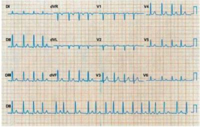
A Adenosina e warfarin.
B Amiodarona e AAS.
C Metoprolol e warfarin.
D Digoxina e AAS.
Questão 27 · Antagonistas da vitamina K · 4000113784Num paciente em uso de warfarin para anticoagular, qual deve ser o exame de escolha para acompanhar a anticoagulação?
A T TPA.
B Tempo de coagulação.
C Não é necessário exame de acompanhamento
D INR.
Questão 28 · Anticoagulação oral · Medicações usadas para controle da f requência cardíaca · 4000110630Critérios para escolha da estratégia terapêutica Em um paciente com fibrilação atrial de alta resposta ventricular e de tempo indeterminada, a conduta ideal a ser tomada é:
A Controle de frequência e anticoagulação plena por tempo indeterminado.
B Cardioversão elétrica imediata.
C Cardioversão química imediata.
D Estudo eletrofisiológico e ablação por radiofrequência.
E Controle da frequência e anticoagulação plena por 3 semanas, seguida de cardioversão
Questão 29 · Estenose mitral · Fatores clínicos predisponentes · 4000108725Qual arritmia é mais frequente em pacientes cirúrgicos portadores de Doença Valvar Mitral?
A Fibrilação Ventricular.
B Taquicardia Ventricular.
C Extra-sístole atrial.
D Fibrilação Atrial.
Questão 30 · Medicações usadas para controle do ritmo cardíaco · Cardioversão elétrica · 4000103117Homem de 73 anos de idade procura a unidade básica de saúde por palpitação de início súbito na noite anterior. Nega dor torácica ou dispneia. É hipertenso bem controlado há 22 anos, em uso de hidroclorotiazida 25 mg/d e captopril 150 mg/d (dose máxima). Nega outros antecedentes mórbidos relevantes e não faz uso de outros medicamentos. No exame clínico, pulso = 102 bpm; pressão arterial = 126 x 80 mmHg; frequência cardíaca = 124 bpm; saturação de oxigênio em ar ambiente = 99%. A ausculta cardíaca revela um ritmo irregularmente irregular, com bulhas taquicárdicas, normofonéticas e sem sopros. Foi realizado um eletrocardiograma na UBS e a principal hipótese diagnóstica foi confirmada. Qual é a conduta para o caso?
A Suspender captopril.
B Realizar cardioversão.
C Introduzir digoxina.
D Massagem carotídea.
Questão 31 · Anticoagulação oral · Medicações usadas para controle da f requência cardíaca · 4000100768Tratamento das taquicardias de QRS estreito Roberto, 63 anos, veio ao PS por queixa de palpitações. Estas são desconfortáveis, rápidas e começaram há 2 horas. Nega dor torácica ou dispneia. Tem antecedente de uso de álcool e faz uso regular de 12 unidades de cerveja por dia. Possui DM tipo 2, HAS e asma. Não é sempre aderente com as medicações que incluem metformina, gliclazida, ramipril, salbutamol de demanda e salmeterol+ uticasona. EF: Consciente, odor alcoólico. FC 185bpm, irregular. PA 126x73 e FR 18 ipm. Estase jugular ausente. Ausculta cardíaca normal. Pulmões livres. Qual a interpretação do ECG e a melhor conduta?
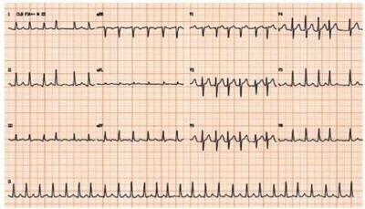
A Flutter atrial, anticoagulação e digitálico.
B Flutter atrial, cardioversão elétrica.
C Fibrilação atrial, cardioversão elétrica.
D Fibrilação atrial, anticoagulação, betabloqueador.
Questão 32 · Tratamento · 4000098849Mulher, 75a, procura atendimento médico por palpitações há um ano. Antecedentes pessoais: hipertensa, diabética de longa data e um acidente vascular cerebral há três meses. Em uso de atenolol 25 mg/dia, anlodipina 10 mg/dia, metformina 2.550 mg/dia e glimepirida 4 mg/dia. Exame físico: PA = 144 x 82 mmHg, neurológico: força grau III e paresia em perna direita. Eletrocardiograma: A conduta é iniciar:
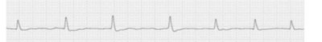
A Aspirina e warfarin.
B Warfarin.
C Ômega 3.
D Aspirina e clopidogrel.
Questão 33 · Anticoagulação oral · Critérios para escolha da estratégia terapêutica · 4000088693Homem de 68 anos, portador de diabetes mellitus tipo 2 e hipertensão arterial sistêmica, relata que não faz acompanhamento médico regular e, depois da insistência da família, resolveu procurar o cardiologista para uma consulta médica de rotina. O paciente nega sintomas ou outras comorbidades. Encontra-se em uso de Enalapril de 10 mg, de 12/12h, e Metformina de 500 mg, 3x ao dia. Ao exame físico, apresenta-se em bom estado geral, corado, pressão arterial = 136 x 84 mmHg; frequência cardíaca = 114 bpm; ritmo cardíaco irregular, sem sopro, sem outras alterações. Realizou exames cujos resultados estão descritos a seguir: Hb = 13 g/dl; leucócitos = 5.300; plaquetas = 250 mil; Cr = 0,8 mg/dl; Na = 135 mEq/L; K = 4,2 mEq/L; glicemia de jejum = 151 mg/dl; Hb gli = 7,5%; colesterol total = 201; HDL = 43; LDL = 102; triglicerideos = 299 mg/dl, coagulograma normal e o eletrocardiograma reproduzido a seguir: Considerando a história clínica do paciente descrita acima e os resultados dos exames realizados, a conduta adequada para o caso é:
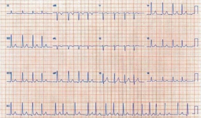
A Aumentar a dose de Enalapril para 20 mg, de 12/12h, e introduzir o Metoprolol de 25 mg, de 12/12h, pois a meta pressórica deve ser abaixo de 120 x 80 mmHg.
B A introdução de um fibrato para redução do risco cardiovascular.
C Iniciar amiodarona associada à anticoagulação oral que deverá ser mantida por 4 semanas, após a reversão da arritmia.
D A introdução de um novo anticoagulante oral, associado ao controle da frequência cardíaca sem reversão da arritmia.
Questão 34 · Estenose mitral · Fibrilação Atrial · 4000076910Uma paciente de 30 anos procura atendimento na emergência devido à dispneia, palpitações e hemoptise. Ela relatou história de febre reumática diagnosticada aos 7 anos de idade. Exame físico: Paciente lúcida, hipocorada 2+/4+, taquipnéica, acianótica e anictérica. PA: 100 x 78 mmHg, FR: 26 IRPM, Pulso Radial: 98 BPM, Tax: 36,7 graus celsius. Jugulares túrgidas a 45 graus. AR: Estertores nos nos 1/3 inferiores de ambos os pulmões. ACV: Ritmo irregular. B1 hiperfonética no foco mitral. P2>A2. Sopro diastólico 3+/6+ no foco mitral. Sopro diastólico de 2+/6+ no foco pulmonar. Sopro sistólico de 2+/6+ no foco tricúspide. B3 no foco tricúspide. Frequência cardíaca: 130 BPM. Abdômen em ventre de batráquio. Fígado a 6 cm do RCD, doloroso ao toque e pulsátil. Sinal do piparote ausente. Traube com percussão maciça. MMII: edema de 3+/4+, frio, mole e indolor. Assinale a alternativa que contém a lesão cardíaca valvar principal e o fator desencadeante da piora sintomática apresentada pela paciente:
A Insuficiência mitral e fibrilação atrial.
B Insuficiência mitral e taquicardia paroxística supraventricular.
C Estenose Mitral e fibrilação atrial.
D Estenose Mitral e taquicardia paroxística supraventricular.
Questão 35 · Flutter atrial · 4000067777Você é chamado pela enfermagem para avaliar um paciente de 33 anos na clínica cirúrgica do Hospital Alcides Carneiro, internado para investigação de nódulo tireoidiano e que iniciou subitamente palpitações. PA: 110 x 60 mmHg, FC: 151 bpm. É realizado um eletrocardiograma de 12 derivações (ECG 1), repetido após manobra vagal e administração de adenosina 6mg IV em bolus (ECG 2). Qual o diagnóstico eletrocardiográfico?
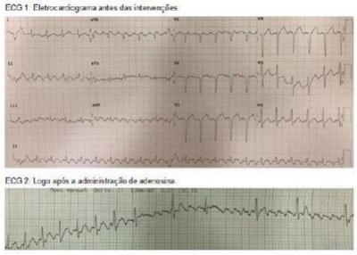
A Flutter atrial.
B Fibrilação atrial.
C Taquicardia supraventricular por reentrada nodal.
D Taquicardia atrial multifocal.
Questão 36 · Antagonistas da vitamina K · 4000051883No paciente com insu ciência renal em tratamento hemodialítico, com brilação atrial permanente e indicação de anticoagulação, qual das opções abaixo assinala o melhor tratamento farmacológico?
A warfarin com meta de INR entre 2 e 3
B rivaroxabana 15 mg/dia, com meta de INR entre 2 e 3
C dabigatrana 2,5 mg/dia, com meta de PT T 2,5 vezes o basal
D enoxaparina 1 mg/kg/dose 2 x ao dia, sem necessidade de controle
Questão 37 · Escores de avaliação de risco tromboembólico e hemorrágico · 4000048793Paciente sexo feminino, 59 anos, portadora de FA intermitente. Seu médico considerou início de terapia anticoagulante. Seu risco de sangramento pelo ChadDSVASc foi 0. Qual outro teste útil para planejar seu tratamento?
A Holter por 7 dias.
B Holter 24 horas.
C Ecocardiograma.
D Teste de esteira.
Questão 38 · Tratamento · 4000036886Com relação à fibrilação atrial, assinale a alternativa incorreta:
A devido à ação inotrópica negativa dos betabloqueadores, devem ser evitados nos pacientes com fibrilação atrial.
B hipertireoidismo e intoxicação alcoólica aguda são causas bem definidas de fibrilação atrial.
C idade >75 anos é um fator de risco para acidente vascular cerebral no paciente portador de fibrilação atrial.
D os bloqueadores dos canais de cálcio verapamil e diltiazem podem ser utilizados para o controle da frequência cardíaca nos pacientes com fibrilação atrial.
Questão 39 · Antagonistas da vitamina K · 4000035254Paciente em uso de anticoagulante oral (dicumarínico) decorrente de brilação atrial dá entrada na UTI com diagnóstico de acidente vascular encefálico hemorrágico e necessita de abordagem neurocirúrgica. A melhor opção para correção da coagulação neste paciente é:
A Complexo protrombínico.
B Plasma fresco congelado.
C Vitamina K (fitomenadiona).
D Infusão de plaquetas.
Questão 40 · Ablação por cateter na f ibrilação atrial · 4000019999Podemos obter o controle do ritmo na Fibrilação Atrial por diversas condutas, clínicas ou intervencionistas. Indique a alternativa que apresenta conduta INADEQUADA:
A Evidências sólidas indicam que a ablação da Fibrilação Atrial é mais eficaz do que as drogas antiarrítmicas para controle do ritmo.
B A ablação está indicada como opção para a falência de uma droga antiarrítmica e também como primeira escolha em pacientes selecionados com FA paroxística, sem doença estrutural.
C Pacientes com cardiopatia estrutural e FA paroxística igualmente podem ser considerados para ablação como terapia inicial, desde que se suspeite de taquicardiomiopatia e que o paciente deseje realizar ablação.
D A eficácia da ablação da FA não varia conforme as características clínicas da arritmia e a extensão da cardiopatia de base.
Questão 41 · Eletrocardiograma · 4000012826Considerando um paciente assintomático, com ECG realizado para início de atividades físicas, qual o diagnóstico e conduta CORRETOS?
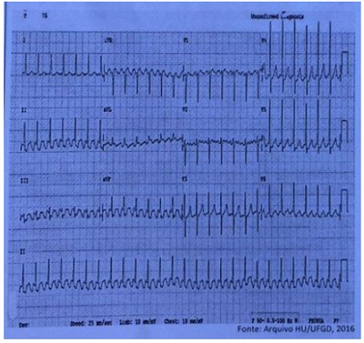
A Taquicardia por dupla via nodal. Adenosina EV.
B Fibrilação Atrial. Controle da frequência cardíaca e anticoagulação.
C Flutter atrial. Controle da frequência cardíaca, anticoagulação e programação para reversão do ritmo, preferencialmente por cardioversão elétrica.
D Wolf-Parkinson-White. Ablação por Estudo Eletrofisiológico.
E Taquicardia atrial. Manobra vagal.
Questão 42 · Escores de avaliação de risco tromboembólico e hemorrágico · 4000127900Critérios para escolha da estratégia terapêutica Um homem com 60 anos de idade foi internado em um hospital municipal com quadro de confusão mental. O paciente reside em outro município, há 300 km do hospital. Na admissão, o paciente se disse assintomático, relatou que não costuma procurar atendimento médico e que preferia morar sozinho no sítio onde nasceu e cuida de uma pequena lavoura. Os familiares que o acompanhavam confirmaram que ele não apresenta comorbidades diagnosticadas, mas relataram que, há 5 dias, o paciente apresentou um episódio de confusão mental, tendo sido levado para internação hospitalar. Acrescentaram que, na ocasião, foi diagnosticada e tratada uma infecção do trato urinário e que, durante o exame físico, detectou-se uma arritmia cardíaca, confirmada por eletrocardiograma, cujo resultado é reproduzido a seguir. O resultado do eletrocardiograma realizado na internação atual apresenta o mesmo padrão. Agora, consciente e orientado, sem queixas, o paciente manifesta desejo de ter alta e de retornar ao seu sítio, a rmando que não pretende realizar outras consultas médicas. Nesse contexto, qual é a conduta médica indicada?
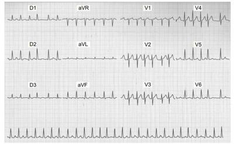
A Dar alta hospitalar ao paciente após introdução de digoxina.
B Dar alta hospitalar ao paciente após a introdução e o ajuste da dose da varfarina.
C Dar alta hospitalar ao paciente após introdução e ajuste de dose do betabloqueador.
D Orientar os familiares para que busquem, por meios jurídicos, a guarda do idoso e o mantenham na sede do município para iniciar tratamento com varfarina.
Questão 43 · Escores de avaliação de risco tromboembólico e hemorrágico · Anticoagulação oral · 4000125695Critérios para escolha da estratégia terapêutica Homem hipertenso de 78 anos dá entrada no pronto-socorro com queixas de batedeira e dispneia súbita, mesmo ao repouso; nega dor precordial, com evolução de cerca de 4h. Exame físico PA = 150 x 95 mmHg; FC = 135 bpm; T= 36,5ºC; FR = 24 irpm; oximetria de pulso (ar ambiente) = 96%; pulmões sem ruídos adventícios; coração: bulhas arrítmicas, hipofonéticas, não são auscultados sopros. Membros: edema maleolar +/4+, com perfusão imediata. O paciente traz consigo exames ambulatoriais recentes mostrando cavidades cardíacas e fração de ejeção normais e ECG em ritmo sinusal, com sobrecarga atrial esquerda. ECG realizado no momento da admissão. (Conforme imagem do caderno de questões) Com relação ao caso, marque a alternativa INCORRETA:
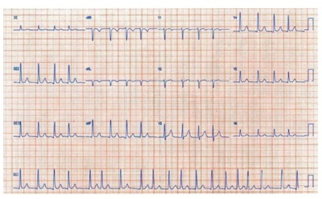
A A cardioversão química é uma estratégia terapêutica aceitável para este paciente nas primeiras 48h de tratamento.
B Indicar anticoagulação com inibidores da vitamina K, mantendo RNI entre 2,0 e 3,0.
C As alterações eletrocardiográficas prévias à esta internação aumentam consideravelmente o risco embólico do paciente segundo critérios do CHA2DS2-VASc, visto praticamente dobrarem o risco segundo esses critérios.
D A heparina não-fracionada endovenosa deverá ser utilizada mantendo-se o T TPA de 1,5 a 2 vezes o valor de referência.
E O ecocardiograma transesofágico poderá ser utilizado como alternativa à anticoagulação antes da cardioversão.
Questão 44 · Fatores clínicos predisponentes · 4000119495Mulher, 35 anos, tem estenose mitral de origem reumática, veio a consulta e você a avaliou e descobriu que ela tem FA e trouxe ECG de 1 ano, que já mostrava FA. Qual dos achados do exame físico não deveremos encontrar nessa paciente?
A B1 hiperfonética.
B B4.
C Ruflar diastólico.
D Estalido de abertura.
Questão 45 · Antagonistas da vitamina K · 4000119492Mulher, 35 anos, tem estenose mitral de origem reumática, veio à consulta e você a avaliou e descobriu que ela tem FA e trouxe ECG de 1 ano, que já mostrava FA. Em relação à anticoagulação desta paciente, podíamos iniciar:
A Ácido acetilsalicílico.
B Rivaroxabana.
C Warfarin.
D Depende do CHADS2VASc.
Questão 46 · Epidemiologia · 4000090768A arritmia cardíaca sustentada mais frequente em idosos (idade acima de 65 anos) é:
A Fibrilação atrial.
B Taquicardia sinusal.
C Bloqueio átrio ventricular de primeiro grau.
D Bradicardia sinusal.
E Síndrome bradicardia taquicardia.
Questão 47 · Fibrilação Atrial · Fatores clínicos predisponentes · 4000072891Durante a avaliação de um paciente com doença de Parkinson que se queixa de palpitações, é detectado ritmo cardíaco irregular, sendo suspeitado o diagnóstico de brilação atrial paroxística. Realizado eletrocardiograma de superfície, há dúvida quanto ao ritmo de base, uma vez que os tremores em repouso causam um tremulado na linha de base do registro gráfico. O dado que permitiria afastar o diagnóstico de fibrilação atrial é:
A Ausência de choque valvar em foco aórtico.
B Presença de 4ª bulha à ausculta cardíaca.
C Ausência de onda "a" no pulso venoso.
D Presença de anisocardioesfigmia.
Questão 48 · Fatores clínicos predisponentes · Prevenção de tromboembolismo · 4000069622São fatores de risco cardioembólico para AVE em pacientes portadores de Fibrilação Atrial:
A Passado de Acidente isquêmico transitório e Estenose mitral.
B Hipertensão Arterial Pulmonar e Diabetes Mellitus.
C Idade maior que 75 anos e Prolapso de válvula mitral com regurgitação.
D Hipotireoidismo e Disfunção ventricular esquerda.
Questão 49 · Síndrome de Wolf f ParkinsonWhite · 4000054482Pacientes do sexo masculino de 37 anos, jogador de tênis, portador de síndrome de Wolf-Parkinson-White, desenvolve taquicardia irregular de complexo largo na frequência de 200 batimentos por minuto. Ele parece confortável e apresenta pequena instabilidade hemodinâmica. Neste momento, o tratamento útil deve incluir:
A Digoxina;
B Amiodarona;
C Propranolol;
D Verapamil;
E Cardioversão corrente direta;
Questão 50 · Escores de avaliação de risco tromboembólico e hemorrágico · 4000043787Além de aspectos cardiológicos com importantes complicações, a Fibrilação Atrial causa enormes outras complicações à distância, entre elas os fenômenos emboligênicos. Sobre isso, concluímos que:
A O escore de risco para hemorragia não contraindica o uso de anticoagulante oral, mas orienta quanto à necessidade de cuidados especiais para tornar o tratamento mais seguro.
B Não ocorre risco de interação de anticoagulação e consumo de álcool.
C Não há necessidade de avaliar, concomitantemente, risco emboligênico e de sangramento.
D O conceito “benefício líquido” não leva em consideração os aspectos positivos da redução de risco de tromboembolismo bem como de hemorragia.
Questão 51 · Tratamento · 4000041342Homem de 56 anos comparece a ambulatório de clínica médica com relato de palpitações que se iniciaram há 5 dias. Refere diagnóstico de hipertensão arterial, mas não aderente ao tratamento. Ao exame físico, está em bom estado geral, eupneico, com pressão arterial de 130 x 90 mmHg, frequência cardíaca de 130 bpm, bulhas arrítmicas, sem sopros. Após submeter-se ao eletrocardiograma, é constatado flutter atrial 2:1. Nesse caso, a conduta indicada é:
A Anticoagulação plena e desfibrilação.
B Cardioversão química com amiodarona.
C Adenosina.
D Inibidores do nódulo AV, considerando que paciente está estável.
E A cardioversão elétrica com 100 J.
Questão 52 · Prevenção de tromboembolismo · 4000029475Uma mulher de 45 anos é portadora de estenose mitral de origem reumática e faz uso de atenolol. Apresenta-se em classe funcional II. O ecocardiograma transesofágico mostra área valvar mitral de 0,9 cm², com boa morfologia e insu ciência mitral mínima, ausência de trombos no átrio esquerdo; diâmetro e função sistólica do VE preservados. O ritmo no ECG é de fibrilação atrial. Sobre a profilaxia dos fenômenos tromboembólicos, a conduta mais apropriada é prescrever:
A Varfarina, com alvo de INR entre 2,5 e 3,5.
B Dabigatrana ou rivaroxabana, sem necessidade de ajuste do INR.
C Varfarina, com alvo de INR entre 2,0 e 3,0.
D Ácido acetilsalicílico associado à varfarina, com alvo de INR entre 2,0 e 3,0.
E Ácido acetilsalicílico.
Questão 53 · Medicações usadas para controle do ritmo cardíaco · 4000016485Em paciente com brilação atrial aguda e sem cardiopatia estrutural, caso o médico opte por reversão da arritmia com droga, qual das abaixo seria a de primeira escolha?
A Amiodarona.
B Propafenona.
C Adenosina.
D Quinidina.
E Sotalol.
Questão 54 · Medicações usadas para controle do ritmo cardíaco · 4000016030A brilação atrial ocorre com certa frequência em pacientes com insu ciência cardíaca, podendo ser uma das causas de descompensação clínica do paciente. Quando necessário, a reversão dessa arritmia deve ser feita com um antiarrítmico com pouco ou nenhum efeito inotrópico negativo. Qual opção abaixo indica o fármaco preferido para restaurar e manter o ritmo sinusal nesses casos?
A Digoxina.
B Quinidina.
C Disopiramida.
D Amiodarona.
E Flecainida.
Questão 55 · Medicações usadas para controle da f requência cardíaca · Prevenção de tromboembolismo · 4000113437Cardioversão elétrica Em um paciente com brilação atrial de alta resposta ventricular e de instalação por tempo indeterminado, a conduta ideal a ser tomada será:
A Controle de frequência e anticoagulação plena por tempo indeterminado.
B Cardioversão elétrica imediata.
C Cardioversão química imediata.
D Estudo eletrofisiológico e ablação por radiofrequência.
E Controle da frequência e anticoagulação plena por 3 semanas, seguida de cardioversão.
Questão 56 · Tratamento · 4000090869Paciente de 65 anos, com história de hipertensão arterial sistêmica, chegou à emergência referindo palpitações há 12 horas. A pressão arterial era de 120 x 80 mmHg. O eletrocardiograma realizado por ocasião da admissão está reproduzido abaixo. Considere as assertivas propostas sobre a condução do caso. I – O uso de betabloqueadores está indicado, já que, na maioria dos casos, obtém-se controle da frequência cardíaca em longo prazo com essa classe de medicamentos; II – O tratamento inicial deve ser feito com cardioversão sincronizada utilizando-se 50 Joules; III – A reversão da arritmia pode ser tentada com o uso intravenoso de verapamil (até 10 mg). Qual (ais) é (são) CORRETA (S)?
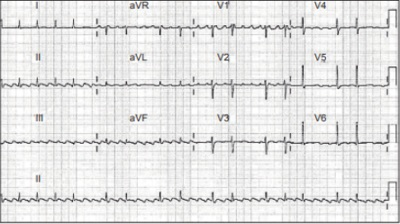
A Apenas I.
B Apenas II.
C Apenas III.
D Apenas I e II.
E I, II e III.
Questão 57 · Antagonistas da vitamina K · Manejo do sangramento associado aos anticoagulantes orais · 4000084854Homem de 67 anos portador de brilação atrial em uso de warfarina retorna ao ambulatório de cardiologia trazendo resultado de seu último INR, que foi de 6,0. Ele está assintomático e nega episódios de sangramento. Qual deve ser a conduta adotada nesse caso?
A Suspender a warfarin e aguardar o INR ficar menor que 3.
B Transfundir plasma fresco devido ao risco de sangramento.
C Transfundir plaquetas.
D Prescrever complexo protrombínico
E Prescrever vitamina K 10 mg intravenosa.
Questão 58 · Escores de avaliação de risco tromboembólico e hemorrágico · 4000060889Qual das seguintes alternativas NÃO está associada ao aumento do risco de AVC embólico em pacientes com brilação atrial?
A Diabetes.
B Idade acima de 75 anos.
C Hipercolesterolemia.
D Hipertensão.
E Insuficiência cardíaca.
Questão 59 · Fatores clínicos predisponentes · 4000054219Paciente de 31 anos, do sexo masculino, dá entrada no pronto-socorro a noite vindo de uma festa onde consumiu bebida alcoólica em grande quantidade associada com energéticos. Referia palpitações de início súbito e tonteira não rotatória, com PA na avalição inicial de 100/60 mmHg e FC de 140 bpm com ritmo irregular. O diagnóstico mais provável é:
A Taquicardia sinusal.
B Fibrilação atrial.
C Taquicardia ventricular monomórfica.
D Taquicardia por reentrada nodal.
Questão 60 · Fatores clínicos predisponentes · 4000046001Homem, 38 anos, hígido, chegou ao pronto-socorro com queixa de palpitações cardíacas. Relatava ingestão de quantidade excessiva de bebida alcoólica no dia anterior. O seu eletrocardiograma evidenciou arritmia com R-R variável, frequência cardíaca aproximada de 140 bpm e ausência de ondas P. Dentre os achados relacionados abaixo, assinale os esperados ao exame físico desse paciente:
A Pulsos irregularmente arrítmicos e com amplitude completamente variável; bulhas arrítmicas com fonese variável de B1.
B Pulsos arrítmicos com uma falha a cada 5 batimentos e com amplitude regular, porém reduzida; bulhas arrítmicas e com fonese constante, porém hipofonéticas.
C Pulsos irregularmente arrítmicos e com amplitude completamente variável; bulhas arrítmicas e com fonese constante, porém hiperfonéticas.
D Pulsos arrítmicos com uma falha a cada 4 batimentos e com amplitude regular, porém reduzida; bulhas arrítmicas, hiperfonese de B1 e hipofonese de B2.
Questão 61 · Anticoagulação oral · Medicações usadas para controle da f requência cardíaca · 4000021174Critérios para escolha da estratégia terapêutica Paciente de 62 anos dá entrada no serviço de emergências referindo sensação de palpitações há uma semana, com piora após realização de esforço físico. Ao exame, apresenta-se consciente, orientado, eupneico, ritmo cardíaco irregular, pressão arterial de 140 x 80 mmHg e frequência cardíaca de 128 bpm. O ritmo cardíaco está ilustrado no ECG abaixo. (VER IMAGEM) A conduta a ser tomada é:
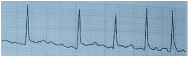
A Cardioversão elétrica imediata.
B Cardioversão química imediata.
C Controle da frequência cardíaca e anticoagulação por 3-4 semanas, seguidos de cardioversão.
D Controle da frequência cardíaca seguido de ablação do nó atrioventricular e implante de marca-passo.
Questão 62 · Medicações usadas para controle da f requência cardíaca · 4000003820A Amiodarona apresenta potencialmente diversos efeitos colaterais, isso tanto em nível cardíaco, quanto fora do sistema cardiovascular. Podemos apontar como potenciais efeitos colaterais da Amiodarona, a:
A Fibrose pulmonar.
B Taquicardia.
C Descompensação da glicemia.
D Perversão visual tipo xantocromia.
Questão 63 · Rivaroxabana · 4000124636Quanto ao uso dos novos anticoagulantes orais, é correto:
A Podem ser utilizados em pacientes portadores de FA e prótese mecânica aórtica.
B A dose de Rivaroxabana em pacientes com Clearance de creatinina > 30 e < 50 ml/min é de 15 mg/d.
C É uma alternativa aos pacientes com FA e insufiência renal crônica pela comodidade posológia e segurança.
D A dose da Dabigatrana de 110 mg 2x dia foi superior ao marevan na redução de fenômenos tromboembólicos.
Questão 64 · Escores de avaliação de risco tromboembólico e hemorrágico · 4000124633Paciente de 60 anos, masculino, hipertenso e em tratamento com enalapril 20 mg/d, hemoglobina glicada de 7 g%, refere palpitação há 4 dias. ECG evidência FA com resposta ventricular de 110 - 120 bpm. PA = 120 x 75 mmHg. Informa ser portador de insufiência renal crônica e em tratamento dialítico 3x na semana. Qual das afirmações abaixo é a correta?
A CHADS-VASC de 2 e HAS-BLED de 2, indicam uso de anticoagulação e baixo risco de sangramento.
B CHADS-VASC de 2 e HAS-BLED de 4, indicam uso de anticoagulação e alto risco de sangramento.
C CHADS-VASC de 4 e HAS-BLED de 4, indicam uso de anticoagulação e alto risco de sangramento.
D CHADS-VASC de 4 e HAS-BLED de 2, indicam uso de anticoagulação e baixo risco de sangramento.
Questão 65 · Medicações usadas para controle da f requência cardíaca · 4000068817Com relação à fibrilação atrial, assinale a alternativa INCORRETA:
A Devido à ação inotrópica negativa dos betabloqueadores, eles devem ser evitados nos pacientes com fibrilação atrial.
B Hipertireoidismo e intoxicação alcoólica aguda são causas bem definidas de fibrilação atrial.
C Idade superior a 75 anos é um fator de risco para a ocorrência de AVC no paciente portador de fibrilação atrial.
D Os bloqueadores do canal de cálcio verapamil e diltiazem podem ser utilizados para o controle da frequência cardíaca nos pacientes com fibrilação atrial.
E A incidência da fibrilação atrial aumenta com a idade.
Questão 66 · Medicações usadas para controle do ritmo cardíaco · 4000014842Assinale a alternativa que NÃO representa um efeito colateral típico da amiodarona.
A Hipotireoidismo.
B Bloqueio atrioventricular.
C Necrose tubular aguda.
D Pneumonite intersticial.
Questão 67 · Medicações usadas para controle do ritmo cardíaco · Bloqueadores dos canais de potássio · 4000108586A fotossensibilidade, disfunção tiroideana, pneumonite intersticial, disfunção hepática e neuropatia periférica são efeitos adversos particularmente relacionados ao uso crônico de:
A Quinidina.
B Propafenona
C Amiodarona
D Procainamida
Questão 68 · Anticoagulação oral · 4000106228Em relação aos anticoagulantes e antiplaquetários, assinale a alternativa em que a medicação apresenta o mecanismo de ação INCORRETO:
A Dabigatrana; inibidor direto da trombina.
B Apixabana; inibidor direto da trombina.
C Rivaroxabana; inibidor direto do fator Xa.
D Ácido Acetilsalicílico (AAS); inibidor da agregação plaquetária.
E Varfarina; antagonista da vitamina K.
Questão 69 · Escores de avaliação de risco tromboembólico e hemorrágico · Anticoagulação oral · 4000105169A terapia antitrombótica com anticoagulantes é efetiva em reduzir o risco de embolização sistêmica em paciente com fibrilação atrial de causa não valvular. Leia as afirmativas e assinale a alternativa correta. I. A estratificação do risco de embolização arterial deve ser feita com CHADS2 ou CHA2DS2-VASc. II. A pacientes com score CHADS2 igual a 2 deve ser dada terapia anticoagulante. III. Para pacientes tomando warfarina devemos deixar INR entre 1,5 e 2,0. IV. A dabigatrana é um inibidor direto da trombina e a rivaroxabana é um inibidor do fator Xa. Estão CORRETAS as afirmativas:
A II, III e IV, apenas
B I, II e IV, apenas.
C I e IV, apenas.
D I, II e III, apenas.
Questão 70 · Medicações usadas para controle da f requência cardíaca · Tratamento · 4000090397Medicações usadas para controle do ritmo cardíaco A brilação atrial subaguda (48h) atendida num setor de emergência pode ser revertida por várias estratégias terapêuticas. Assinale a assertiva correta sobre essa síndrome:
A A amiodarona intravenosa está contraindicada em pacientes com função sistólica reduzida.
B A propafenona intravenosa apresenta boa efetividade para a reversão da fibrilação atrial subaguda.
C A amiodarona intravenosa é efetiva, mas tem como efeitos adversos a disfunção da tireoide, a pneumonite e opacificação do cristalino já nas primeiras doses.
D Os betabloqueadores intravenosos têm maior efetividade para a reversão da arritmia do que a propafenona e a amiodarona.
Questão 71 · Tratamento · 4000086236Em relação ao manejo de fibrilação atrial, associe os fármacos às respectivas indicações. 1 - Adenosina; 2 - Amiodarona; 3 - Sotalol; 4 - Propafenona; 5 - Digoxina. ( ) É a alternativa para reversão domiciliar de fibrilação atrial recorrente em paciente sem cardiopatia estrutural; ( ) Sua utilização prévia está associada à maior taxa de sucesso de cardioversão elétrica; ( ) É utilizado (a) para controle de resposta ventricular. A sequência numérica CORRETA, de cima para baixo, é:
A 1 - 2 - 4.
B 2 - 1 - 3.
C 2 - 4 - 5.
D 4 - 1 - 3.
E 4 - 2 - 5.
Questão 72 · Bloqueadores dos canais de potássio · 4000050255Considerando pacientes em uso crônico de amiodarona, o efeito adverso mais comum relacionado ao uso da medicação é:
A hipotireoidismo.
B fibrose pulmonar.
C alteração de enzimas hepáticas.
D ataxia, polineuropatia.
E microcristais de córnea.
Questão 73 · Flutter atrial · 4000042567O flutter atrial é uma arritmia frequente na Clínica Médica. Sobre esta situação clínica, assinale a alternativa errada:
A O Eletrocardiograma (ECG) evidencia ondas F de ativação atrial e o padrão mais comum é a frequência atrial de 300 bpm, com uma frequência ventricular de 150 bpm, com uma relação A:V fixa em torno de 2:1.
B Na ausculta cardíaca, evidenciamos um ritmo regular, geralmente taquicárdico, exceto quando o Bloqueio A:V for variável (4:1 ; 3:1 ; 2:1, etc) situação em que a ausculta cardíaca será semelhante à da fibrilação atrial, com um ritmo cardíaco bem irregular.
C Quando o flutter atrial se mantiver por períodos prolongados, pode ocorrer insuficiência cardíaca e em casos crônicos levar a uma taquicardiomiopatia.
D No tratamento do flutter atrial, as principais medicações usadas para a reversão são a digoxina, procainamida e quinidina, com altos índices de sucesso (> que 80 %), e ao contrário da fibrilação atrial, nunca vai ser necessária a anticoagulação.
E O tratamento definitivo de escolha desta arritmia é a ablação por radiofrequência, com eliminação do circuito de reentrada, mantendo-se intacta a condução AV.
Questão 74 · Fatores clínicos predisponentes · 4000029619Entre as causas reversíveis de fibrilação atrial, encontram-se:
A Hipotireoidismo e infarto agudo do miocárdio.
B Uso de ácido acetilsalicílico e embolia pulmonar.
C Miocardite e labirintite.
D Choque elétrico e ingesta de álcool.
E Pericardite e hipotireoidismo.
Questão 75 · Classif icação clínica · 4000073738Fibrilação atrial com episódios que duram até mais de sete dias e sem resposta à cardioversão é classificada como:
A Paroxística.
B Permanente.
C Persistente.
D Terminal.
Questão 76 · Flutter atrial · 4000045466A arritmia representada no registro eletrocardiográfico abaixo é: Respostas: 1 12 23 34 45 56 67
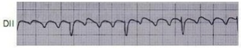
A fibrilação atrial.
B taquicardia atrial.
C taquicardia ventricular.
D flutter atrial.